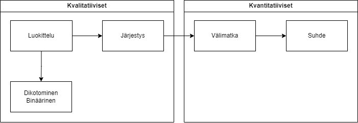

3 Muuttuja ja mittaustasot
Tässä luvussa käydään läpi, mitä tarkoitetaan muuttujalla ja millaisia nimityksiä niille käytetään. Luvussa käydään myös läpi mitkä muuttujien mittaustasot ovat ja miten nämä vaikuttavat tilastolliseen työskentelyyn ja mallivalintaan.
3.1 Muuttujien määritelmä
Kun teemme tutkimusta, työskentelemme aina muuttujilla. Muuttuja on, kuten nimi antaa ymmärtää, jokin asia joka muuttuu. Muuttujalla tarkoitetaan siis jotain “laatikkoa”, joka voi saada jonkun arvon vastaajien tai analyysiyksiköiden kesken. Eri yksiköillä voi olla eri arvot muuttujalla, ja näitä analysoimalla voidaan yrittää vastata tutkimuskysymykseemme.
Voimme tehdä analyysia eri muuttujamäärillä. Yksimuuttujamallissa tarkastelemme yhden muuttujan rakennetta (eri arvojen esiintymistä) tyhjiössä. Näihin voidaan laskea esim. keskiarvojen esittely.
Kaksimuuttujamallissa tarkastelemme taas kahden muuttujan välistä suhdetta - miten muuttujat vaihtelevat yhdessä? Tämä voi tarkoittaa keskiarvojen vertailua eri ryhmien välillä, korrelaatioanalyysia, ristiintaulukointia ja paljon muuta. Erona yksimuuttujamalliin onkin vain, että tarkastelemme kahden muuttujan välistä suhdetta, ei muuttujien omia rakenteita.
Monimuuttujamallissa voidaan lisätä muuttujia enemmän kuin kaksi, ja tarkastella näiden välisiä suhteita. Tällä kurssilla ei käydä läpi monimuuttujamalleja, mutta niiden logiikkaa kannattaa hieman harjoitella, jotta ymmärtää mihin kaksimuuttujamallit pystyvät ja eivät pysty.
Useamman muuttujan mallissa puhutaan yleensä muuttujista ns. kausaalisanastolla. Tutkimuksessa on usein ajatuksena löytää jonkun ilmiön aiheuttamat suhteet (esim. mikä selittää pelastajien väliset terveyserot?). Siksi muuttujista käytetään sanapareja, jotka viittaavat tähän kausaalisuhteeseen:
Riippuvainen (dependent) ja riippumaton (independent) muuttuja, tai
Vaste- (outcome) ja ennustajamuuttuja (predictor)
Riippuvainen muuttuja tai vastemuuttuja on se muuttuja, jonka syitä haluamme selvittää. Toisin sanoen, muuttuja riippuu jostain muusta muuttujasta, tai se syntyy vasteena toiselle muuttujalle.
Riippumaton muuttuja tai ennustajamuuttuja on taas se muuttuja, jonka uskomme selittävän riippuvaisen/vastemuuttujan syntymisen. Toisin sanoen, muuttuja ei riipu (mallissamme!) jostain muusta muuttujasta, tai se ennustaa toista muuttujaa.
On tärkeää huomata, että nämä nimitykset eivät automaattisesti tarkoita, että muuttujat todella olisivat kausaalisuhteessa toisiinsa. Kausaliteettia (jonkin asian vaikutusta toiseen) ei voida sinänsä todistaa tilastotieteellisillä menetelmillä1, vaan se on osittain teoreettinen käsite.
1 Falsifikaation teorian seuraajille tämä juontuu suoraan hypoteesitestauksen määritelmästä, ks. Luku 4.
Tässä kirjassa käytän sanaparia riippuvainen/riippumaton, koska ne ovat vakiintuneita sanoja yhteiskuntatieteissä. Muissa tieteissä, esimerkiksi epidemiologiassa, vaste/ennustaja-sanapari voi olla käytetympi.
3.2 Mittausasteikot tai -tasot
Sen lisäksi, että muuttuja voi olla riippuvainen tai riippumaton, sillä on myös jokin ennalta määritelty mittaustaso. Mittaustasojen määrittely on erittäin tärkeää, sillä ne juontuvat tilastollisesta matematiikasta ja määrittelevät suoraan, mitä malleja pystyy/pitää käyttää muuttujien suhteiden analysoinnissa.
Mittaustasoja on yleisesti ottaen neljä: luokitteluasteikko, järjestysasteikko, välimatka-asteikko ja suhdeasteikko. Nimet tulevat mittaustasojen ominaisuuksista.
Mittaustasot ovat kumulatiivisia, eli seuraavalla tasolla on aina kaikki edeltävien tasojen ominaisuudet, sekä lisäksi jotain “uutta”:
- Luokitteluasteikolla muuttujien arvot voidaan nimetä ja luokitella, mutta muuta ei voida niillä tehdä. Esimerkkinä asumiskunta.
- Järjestysasteikolla arvot voidaan nimetä, mutta myös asettaa luonnolliseen järjestykseen, esim. pienin/suurin, heikoin/vahvin, kevyin/painavin. Esimerkkinä koulutustaso.
- Välimatka-asteikolla arvot voidaan sekä nimetä että järjestää, jonka lisäksi tasojen välillä on yhtä isot välimatkat. Esimerkkinä luokiteltu bruttotuloasteikko (0-10 000 €, 10 000-20 000 €, 20 000-30 000 €…)
- Suhdeasteikolla on kaikki edeltävät ominaisuudet, mutta sen lisäksi absoluuttinen, luonnollinen nollapiste. Esimerkkinä lämpötila kelvinasteikolla.
Jotta tämä olisi tarpeeksi selkeää, alla (Taulukko 3.1) on sama kuvaus taulukkona:
| Mittaustaso | Nimeäminen ja luokittelu | Luonnollinen järjestys | Samansuuruiset välimatkat | Luonnollinen nollapiste |
|---|---|---|---|---|
| Luokitteluasteikko | X | |||
| Järjestysasteikko | X | X | ||
| Välimatka-asteikko | X | X | X | |
| Suhdeasteikko | X | X | X | X |
Mittaustasot ryhmitetään usein kahteen kategoriaan: kvantitatiiviset ja kvalitatiiviset muuttujat. Kvantitatiiviset muuttujat ovat välimatka- tai suhdeasteikolla, kvalitatiiviset muuttujat taas luokittelu- tai järjestysasteikolla. Nämä nimet voivat kuitenkin olla hieman harhaanjohtavia: kyseessä on kaikissa tapauksissa usein numeroita tekstin sijaan, ja kaikilla tasoilla voidaan tehdä jonkin tapaista tilastollista analyysia.
Näiden lisäksi voidaan myös puhua dikotomisista tai binäärisistä muuttujista. Dikotominen muuttuja on luokitteluasteikon muuttuja, jolla on vain kaksi kategoriaa. Näille on erikoista se, että niillä voidaan tehdä monia eri tilastollisia analyyseja mitä ei yleensä voisi tehdä luokitteluasteikon muuttujalle (esim. regressioanalyysia, t-testausta). Tämä taas juontuu siitä, että jos kahden kategorian muuttuja koodataan arvoiksi 0 ja 1, ja näille lasketaan keskiarvo, niin keskiarvo edustaa arvo 1:n prosentuaalista määrää. Täten keskiarvosta tulee tulkittava mitta, ja sitä voidaan käyttää malleissa, joissa käytetään keskiarvoa (eli melkein kaikki lineaariset mallit).
Alla oleva kaavio (Kuva 3.1) selventänee muuttujien mittaustasoja:

3.3 Mittausasteikon suhde tilastollisiin malleihin
Mittaustasoilla on suora suhde tilastollisiin malleihin: taso tai asteikko määrittelee, mitkä mallit ja menetelmät voidaan laskea. Tämä juontuu tulkittavuudesta: jos esimerkiksi kahden arvon välissä ei ole muita arvoja (eli ne eivät täytä välimatka-asteikon vaatimuksia), niille lasketulla keskiarvolla ei voi olla tulkintaa (koska se voi usein osua kahden arvon väliin).
Sijainti- ja hajontaluvuille käytettävyys määritellään muuttujan mittaustasolta suoraan:
| Mittaustaso | Sijaintiluvut | Hajontaluvut |
|---|---|---|
| Luokittelu | Moodi | |
| Järjestys | Moodi Mediaani Fraktiilit |
Vinouma ja kurtoosi Vaihteluväli |
| Välimatka | Moodi Mediaani Fraktiilit Aritmeettinen keskiarvo |
Vinouma ja kurtoosi Vaihteluväli Varianssi Keskihajonta |
| Suhde | Moodi Mediaani Fraktiilit Aritmeettinen keskiarvo Geometrinen keskiarvo |
Vinouma ja kurtoosi Vaihteluväli Varianssi Keskihajonta |
Näiden lisäksi löytyy monia muita mittoja, joita voidaan laskea eri tasoille. Taulukossa näkyy kuitenkin yleisimmät, sekä varsinkin ne, jotka kohtaatte kurssin aikana sekä tulevaisuuden tilastollisessa työskentelyssänne.
Yksimuuttujamenetelminä voidaan myös laskea merkkitesti sekä yhden otoksen t-testi. Merkkitesti voidaan suorittaa, kun muuttuja on järjestysasteikolla tai suuremmalla. T-testi taas vaatii muuttujan olevan välimatka-asteikolla tai suhdeasteikolla.
Kaksimuuttujamalleilla on myös vaatimuksia muuttujien mittaustasoille, mutta nämä tulevat aina pareittain. Alla olevassa matriisitaulukossa riveissä on riippumaton muuttuja ja sarakkeissa riippuvainen muuttuja.
Riippuvainen sarakkeissa Riippumaton riveissä |
Luokittelu | Järjestys | Välimatka | Suhde |
|---|---|---|---|---|
| Luokittelu | Ristiintaulukointi (khiin neliö) | Ristiintaulukointi (khiin neliö) | Wilcoxonin signed-rank Mann-Whitney’n U-testi T-testi |
Wilcoxonin signed-rank Mann-Whitney’n U-testi T-testi |
| Järjestys | Ristiintaulukointi (khiin neliö) | Ristiintaulukointi (khiin neliö) | Wilcoxonin signed-rank Mann-Whitney’n U-testi T-testi |
Wilcoxonin signed-rank Mann-Whitney’n U-testi T-testi |
| Välimatka | Varianssianalyysi | Varianssianalyysi | Korrelaatio | Korrelaatio |
| Suhde | Varianssianalyysi | Varianssianalyysi | Korrelaatio | Korrelaatio |
Tärkein erottelija mallin valinnassa on muuttujatasojen laajempi kategorisointi kvalitatiivisiin ja kvantitatiivisiin muuttujiin: kuten huomaat, tämän kurssin alla käsiteltävissä malleissa luokittelu- ja järjestysasteikon mallit ovat täysin samat, kuten välimatka- ja suhdeasteikon mallit.
Myös monimuuttujamallit riippuvat muuttujien tasoista, mutta näitä ei käydä tässä vaiheessa läpi.